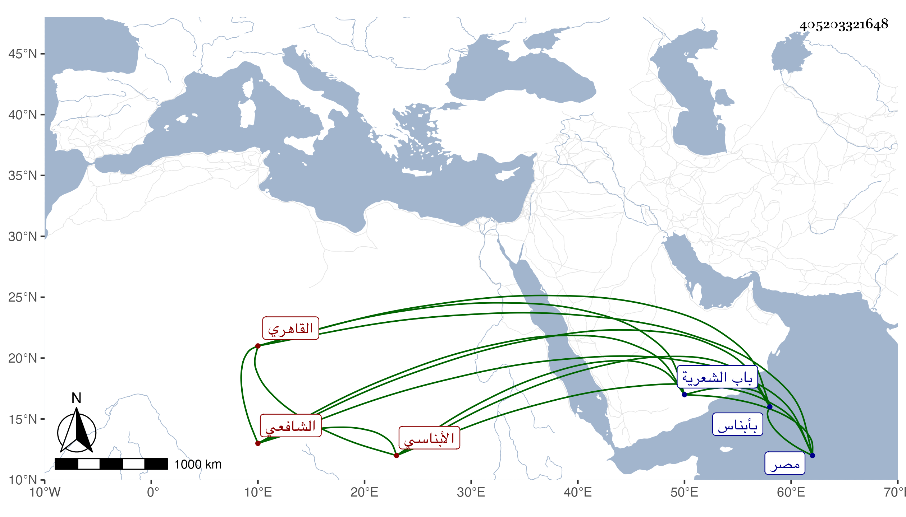

0902Sakhawi.DawLamic.ITO20230111-ara1.EIS1600.405203321648
Biography ID: 405203321648
إبراهيم بن حجاج بن محرز بن مالك البرهان أبو إسحاق الأبناسي ثم القاهري الشافعي والد الزين عبد الرحمن الآتي ويعرف بالأبناسي ولد بعد الثمانين وسبعمائة بأبناس وقرأ القرآن وغيره وقدم منها وهو صغير على سميه البرهان بن موسى الأبناسي في زاويته بالمغنم وأقام بها بقية حياته وبعده ولا أستبعد أخذه عنه وكذا عن أهل تلك الطبقة كالبلقيني الكبير سيما وقد رأيت الزين العراقي أثبت سماعه من نفسه للمجلس الرابع والسبعين بعد الثلاثمائة من أماليه وساق البرهان عنه سنده ببعض الكتب وقرأ على البرهان البيجوري في جامع المختصرات وكان يذم تركيبه وكذا أخذ الفقه وغيره وأظن من شيوخه فيه الصدر سليمان الأبشيطي فقد رأيته شهد عليه في إجازة سنة ثلاث وثلثمائة أو بعدها والعربية عن جماعة كالعجيمي والشمس البوصيري وكان يقول إنه لم يعلم معنى الكلمة إلا منه . ولازم العز بن جماعة في فنونه التي كان يقرئها والشمس البساطي بل كان جل انتفاعه به وكذا لازم العلاء البخاري مدة إقامته بالديار المصرية ولم يكن العلاء يقدم عليه غيره كما سيأتي ويقول أنه عارف بقواعد العلوم . وقرأ عليهما العضد والحاشيتين وكذا كان ابن جماعة يجله وأخذ في مبادىء المنطق وغيره عن الشمس الشنشي وسمع بأخرة على ابن الجزري وغيره وقرأ على شيخنا في شرح النخبة ولازمه في دروسه واسماعه وكان شيخنا يقدمه على رفيقه القاياتي بحيث أجلسه في سنة أربع وثلاثين بالقلعة من جهة يمينه هذا مع مزيد تعظيم البرهان له حتى أن العلاء الرومي لما تجرأ قائلا لشيخنا انه يصلح أن يكون شيخك قال له البرهان بل أنا تلميذه وقرأت عليه وهو شيخ الاسلام وكذا بلغني عن التقي بن قاضي شهبة أنه قال سألت العلاء البخاري عنه فقال انه كان أولى من ابن هشام والقاياتي في غير الفقه وصحب البرهان الادكاوي وتلقن منه وكذا صحب الزاهد بل هو أحد من أوصى على بنيه وجامعه وكان إماما علامة مفتيا فصيحا مفوها عالي الهمة كثير التواضع طارحا للتكلف شهما أبي النفس كريما مع تقلله بحيث أنه كان أحيانا ربما يحتلم فيدلي نفسه بحبل في البئر لعدم تيسر ما يدخل به الحمام ولم يكن باسمه من الوظائف سوى التصوف بالمؤيدية بتنزيل الواقف وبيده مرتب يسير في الجوالي وبعض رزق . ووصفه البقاعي حيث روى عن العز السنباطي عنه شيئا بالعلامة النادرة المحقق وتصدى لنفع الطلبة مدة وحكى أنه قرأ التوضيح أكثر من سبعين مرة وابن المصنف ما ينيف على الثلاثين وكتب عليه حاشية يقال أنها كانت عند الشهاب المسطيهي بل أقرأ العضد في صباه في حياة شيخيه قرأ عليه بعض طلبتهما وهو الزين الأشمومي المتوفي سنة اثنتين وعشرين وممن قرأ عليه شيخنا ابن خضر والجمال بن هشام ولازمه حتى مات وبه انتفع والوروري والمناوي والعبادي والطوخي والشمس النوشي وابن المرخم والعز السنباطي وحكى لي كثيرا من ترجمته وابن قمر وأنشدني له مما نظمه على لسانه للجلال البلقيني
| يقبل الأرض داع لا يفنده | عن الدعاء لكم شيء فيقعده |
| والعبد يسأل مولانا وسيدنا | قاضي القضاة غياث المرء يقصده |
| بحر العلوم الذي لا ينتهي أبدا | وكل بحر له بر يحدده |
| جلال دين الهدى وهو الجلال له | مؤيد الحق والمولى مؤيده |
| نجل الإمام الذي شاعت إمامته | حتى ارتضاها اعاديه وحسده |
| ان امر وحامل القرآن احفظ منهاج الفروع الذي يحيي مشيده | |
| وغيره في علوم جل موقعها | تهدي الفتى ولعلم الشرع ترشده |
| فالعبد يسألكم شيئا يقربه | من اشتغال فإن الفقر يبعده |
| أنهيتها شاكرا ثم الصلاة على | خير الأنام وحسبي الله أحمده |
وكذا أنشدني مما امتدحه شيخه البرهان به فقال :
| الشمس من قمر تكون عجيبا | ورأيت منك من الخصال غريبا |
| إن كان من فقه فأنت إمامه | أو كان من نحو فأنت أريبا |
| أو كان غيرهما فأنت مهذب | هذبت كل مقالة تهذيبا |
وبلغني أن من نظمه قوله :
| خلقت طينا وماء البحر يتلفني | وعند قلبي نفور من مراكبه |
| والبحر ليس رفيقا بالرفيق له | والبر مثل اسمه بر براكبه |
وآخرون منهم ممن هو بقيد الحياة الولوي الاسيوطي والنور اخو حذيفة وحكى لي عنه ان شخصا التمس منه مساعدته عند يشبك الاعرج فاعتذر له بعدم معرفته فأبى إلا أن يساعده فتوجه إليه لمزيد رغبته في مساعدة الملهوف وكلمه في شأنه وسأله في دفعه مع خصمه للشرع فانزعج الأمير مع ذكره بمحبة الخير وقال ألسنا نعمل بالشرع فقال له البرهان أنك لا تعرفه لو وجب علي امرئ قطع يده اليمنى فقطعت اليسرى غلطا كيف تعمل فبادر إلى ارسالهما وحصل الغرض . مات بعد مرض طويل في سابع عشري ربيع الأول سنة ست وثلاثين ودفن عند ضريح الشيخ شهاب خارج باب الشعرية . وقد أرخه شيخنا في أنبائه باختصار وقال انه اشتغل كثيرا وسكن زاوية سميه الشيخ برهان الدين الابناسي وانتفع به الطلبة رحمه الله وإيانا .
